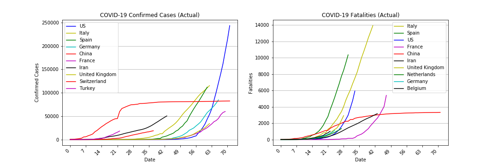

Our Research
For this project we were interested in analyzing the World Development Indicators (WDI) that have been tracked by the World Bank for more than 50 years in order to help achieve global development goals. In conjunction, the U.N. has developed the Human Development Index (HDI) to focus on the criteria that define human achievement beyond just economic development. We wanted to discover which WDIs in particular affect HDI and what level of values can help increase HDI. Our "primary" indicators were simply those that most countries have data for and have been tracked the longest. Our "secondary" indicators are ones that we discovered to be highly related to HDI and worth exploring, despite less availability of tracked data.